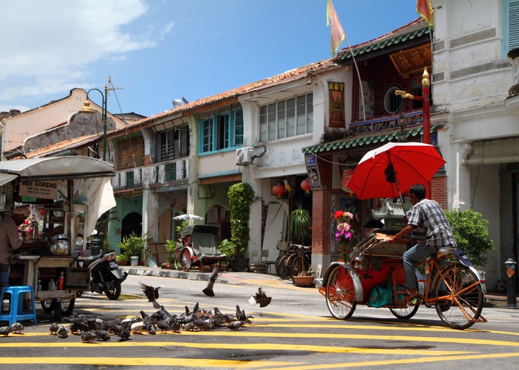
喬治市的唐人街，是檳城最早開發的地方，這裡充滿著喧鬧連天的活動，特別是在華人節慶的時候，更是熱鬧非凡。這裡有許多經營傳統生意的商店。唐人街也設有華人廟宇、興都廟及回教堂。 在此處閒逛、參觀甚至乘搭三輪車環遊一番，肯定是樂趣無窮的。唐人街的特色是它永遠有大大小小的活動在進行著，從廟宇的慶典活動到早市農業市場，以及晚上的夜市商場等等。 檳城街及CAMPBELL街 擁有冷氣設備的商業及購物中心。舊式的華人傳統商店則多設在CHULIA 街道上。至於手工藝品及古董文物商店則可在 FARQUHAR街 找到。

由康麗華絲城堡漫步一會兒，就會抵達位於FARQUHAR街上的檳城博物館及藝術中心。它建於1821年，前身是一座學校。博物館前豎立了一樽萊特的雕像。 此雕像曾於二次世大戰期間被日本人遷走，戰後又豎立回來，不過雕像上的劍則遺失了。 這座小博物館很完整的收藏了舊照片、地圖、圖表、傢俬、服裝、馬來西亞首任首相東姑阿都拉曼的紀念物品及其他深具檳城歷史價值的古文物。 在博物館外面，還放著一個檳城升旗山最早的有軌機動車，供遊客觀賞。
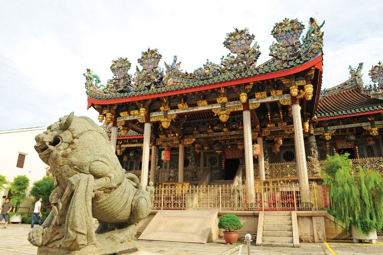 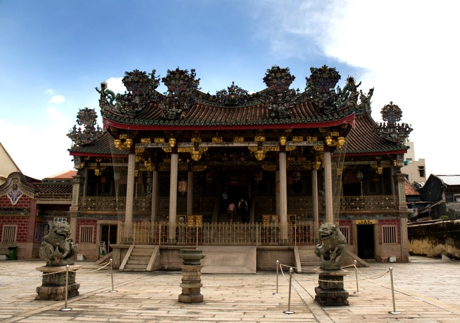
檳城可謂華族宗祠林立，這些宗祠也稱為“公司“。所謂“公司“，即各宗族所設立的祠堂，可供該族群或同姓式的族人，定期聚會或開會之用，它同時也是一座廟堂。設計精緻的邱氏祠堂，是到目前為止檳城島上最大的華人宗祠。 它同時也被稱為龍山堂，其建築物上有很精緻的木雕及鍍金、富有色彩的磚瓦，還有設計獨特的龍、鳳凰及神明的圖案等。檳城龍山堂邱氏祠堂的建築工程始於1853年，但是中間面對許多阻撓，最後終於在1898年正式竣工。 這座建築物非常宏偉，在完工當天，其屋頂突然起火。一些人認為這是因為它建得有如皇宮，犯了大忌。邱氏家族將之詮釋為上天所指示的一個訊息，遂將之改建得比較不那麼宏偉。
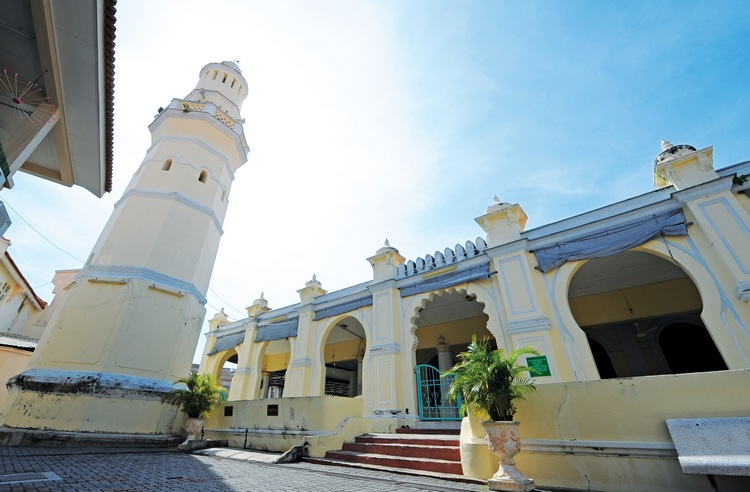
從邱氏祠堂走一小段路，就會到達阿齊街清真寺。這座清真寺是於1820年由一名富有的阿拉伯商人所建。當年，此清真寺是這一區馬來及阿拉伯商人聚會及開會的重要地點。 阿齊街是喬治市最早期的馬來村落。國內的回教堂一般建有摩爾式風格的尖塔，但是這座清真寺的尖塔是屬於埃及風格。
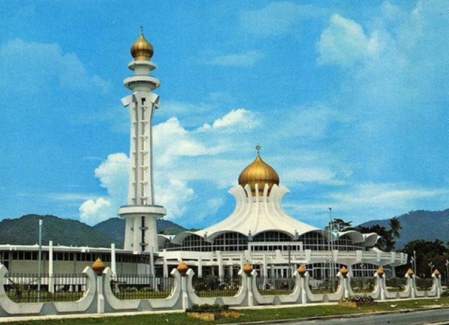
位於州清真寺路的這座清真寺，前後花了四年時間才蓋好。它能容納五千位信徒，每星期五的午間崇拜，皆有許多回教徒聚在這裡一起進行崇拜。所有的參觀者皆必須穿著整齊。
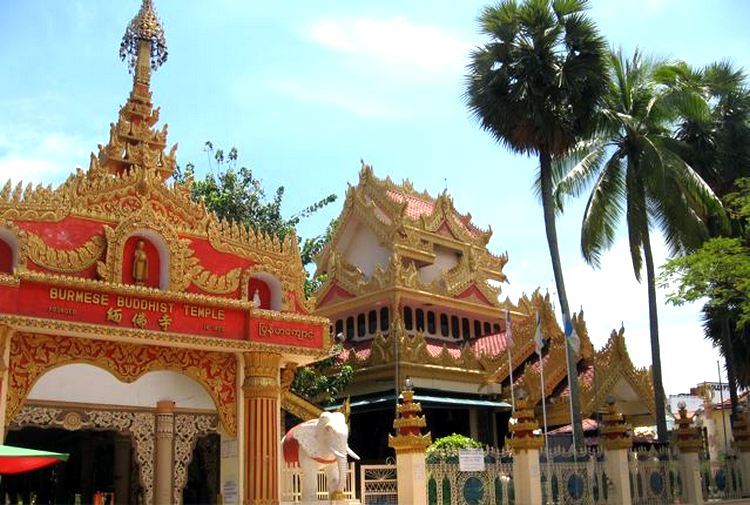 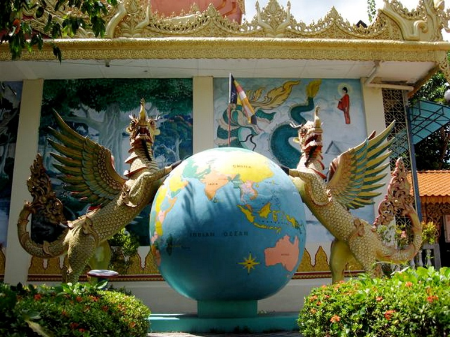 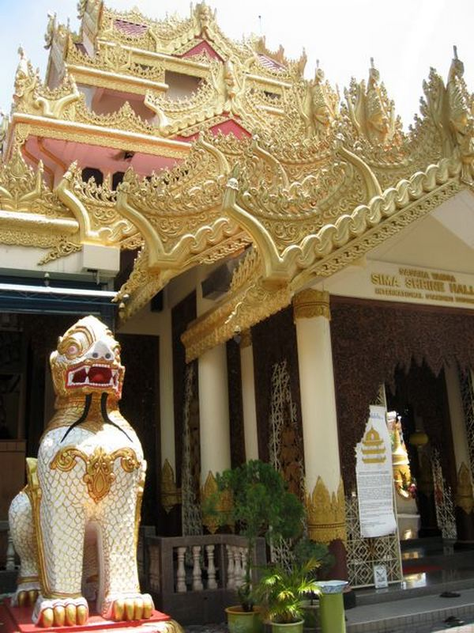
這座緬甸佛寺也是位於緬甸巷，其入口處有兩隻大象看守著。廟堂的範圍內建有一座佛塔，其旁邊則種有一棵菩提樹。此外廟堂的範圍內還建有一口“許願井“。
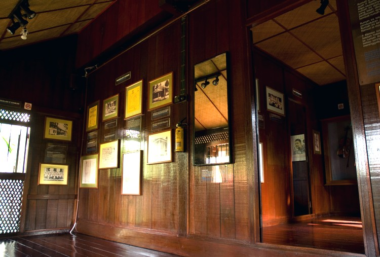
這裡收藏馬來西亞最著名的演藝人員P.RAMLEE的所有珍藏品。它就座落在P.RAMLEE路，此處也是這位集歌星、導演及演員於一身的P.RAMLEE童年成長的住處。 這裡展示了P.RAMLEE在馬來電影業的珍貴圖片，按照其演藝年代逐一介紹這位演員、歌星、導演及製作人的一生。此外，還有許多他在成名之前，早期於檳城生活及成長的圖片等。 這間木屋是由他的父親及一名叔叔，聯合於1926年時親手所蓋。
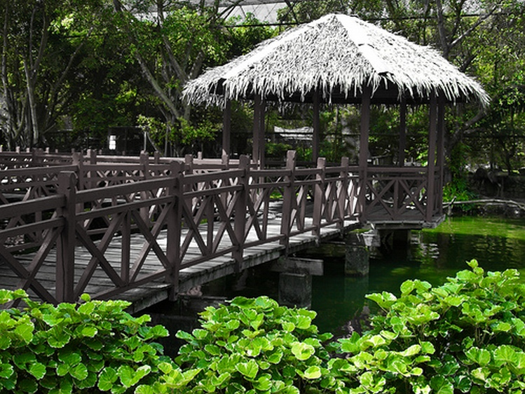
武吉佔姆蘭花及木槿園座落在浮羅山背，距離檳城機場只有幾分鐘的路程。旅客們可以在這裡觀賞種類繁多、色彩繽紛的胡姬(蘭花)花及木槿植物（大紅花）等。花園內還有一座爬蟲動物園。
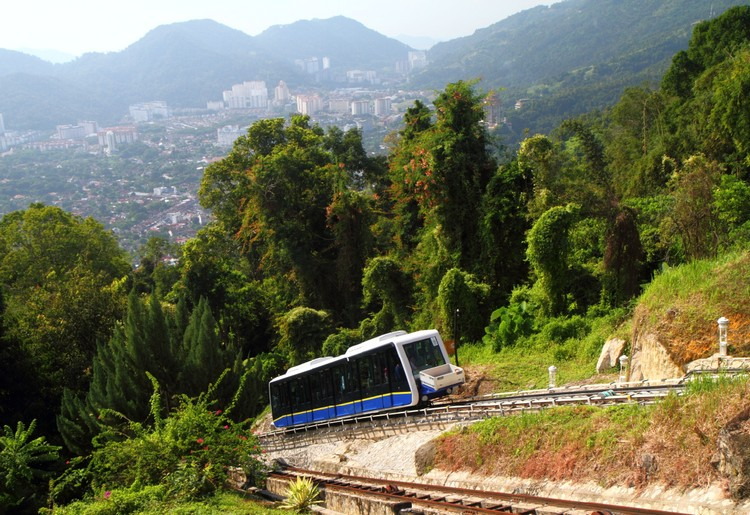 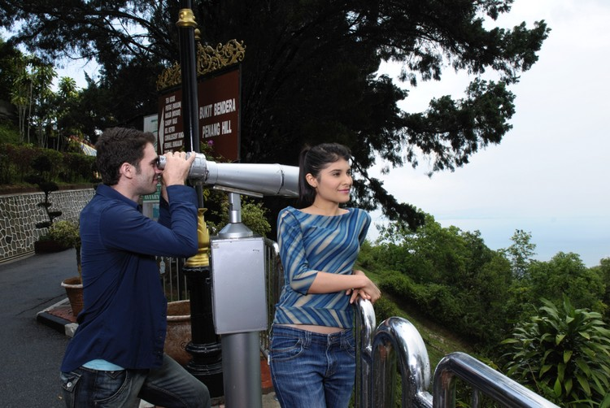
檳城升旗山海拔830公尺，站在其高鋒上，遊客就能夠欣賞到檳城島的全景。升旗山是一個不容錯過的旅遊景點，山上的景色宜人，在黃昏過後，遊客還可以盡情欣賞喬治市閃耀的燈光。 另外，單是呼吸山峰上的新鮮空氣，也是一種至上的享受了。 The Habitant是世界級生態旅遊景點，位於升旗山1億3千萬年歷史的原始熱帶雨林邊緣園區距離喬治市只有6公里，座茖於未開發的雨林保育區中，處於檳城的心臟地帶園區裡的設施包括自然步道、樹冠步道、雨林吊橋、咖啡廳等。 The Habitant以可持續性發展的運作方式為基礎與不同機構合作，包括政府機構、本地及國際研究學院和非政府機構。 園區致力推廣保育意識。The Habitant 希望能啟發旅客，一起創造可持續發展的未來，灌輸欣賞及對重精細卻也多樣化的生態系統的意識，一同保護大自然。 在我們經過特別訓練的自然向導的帶領下，旅客可認識帶箭鳥及鬱烏葉猴(Trachypithecus obscurus)的共生關係。沿途你可能會幸運地看到世界上最大的松鼠之一，巨型黑松鼠(Ratufa雙色)。發掘以The Habitant 為國家的各式昆蟲、鳥類、爬蟲類和哺乳類動物。 沉浸在熱帶雨林的眾多景色和聲音中，采集我們的藥用植物和野生火炬薑。踏上Curtis Crest樹冠步道，在此最佳位置盡覽壯觀的景色。最後，你還能在The Habitant Café盡享一系列美味糕點和手工咖啡。
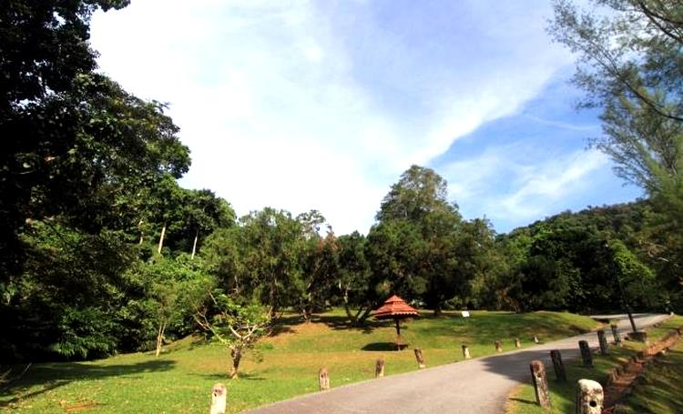 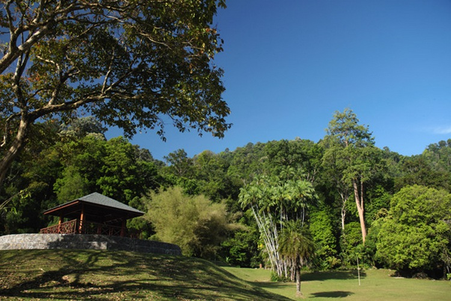 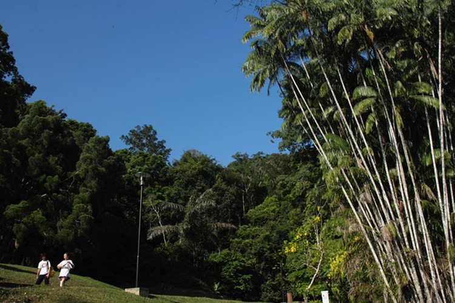
距離升旗山大約四份之一英哩，及離市區大約八公里處，有一座超過百年歷史、規劃良好的植物園。這座植物園有30公頃的範圍。 植物園(Botanic Gardens)是英國殖民地時代由英國人在1884年興建，是馬來西亞最早的公園之一，距離喬治是中心只有八公里。 初期植物園的面積只有72英畝，2004年開始植物園展開了擴建計畫，目前劃入該園的地段擴大到592英畝。 盡管植物園擁有大幅的可供發展地段，不過植物園管理局主任林文忠表示，該園將會保留絕大部分的新開發地段，作為緩衝地帶，保留森林樣貌。他透露，目前植物園真正運用的面積為80英畝。 植物園除了以植物聞名，園內還有一個古蹟級的蓄水池，是檳城歷史上最早的蓄水池之一，為當年殖民地政府主要的水源供應。 蓄水池後方還擁有一個長年都有流水，景致絕佳的瀑布。只可惜基於蓄水池的保安問題，該地區近年已經不在開放給遊人參觀，遊客只能隔著圍籬，遠望百年水池的丰采。 此處風景如詩如畫，園內種有許多青翠的熱帶植物及五顏六色的檳城所獨有的原生植物。遠處可聽到從山上奔流而下的瀑布聲，再加上園內喋喋不休的猴叫聲，更增添回歸大自然的情趣。
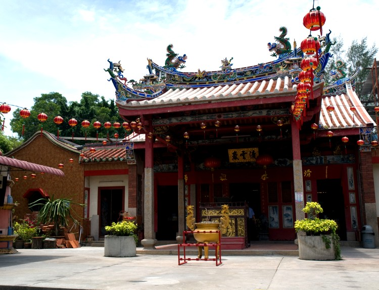
這座廟建於1850年，廟內供奉清水師祖。根據當地民間傳說，有位道士為了保護響尾蛇，就收容在廟內，從此就住在裡面。雖然廟內很多毒蛇，但没有攻擊過人，既不怕人也不傷人，有靈性般的與信徒和平共存著。
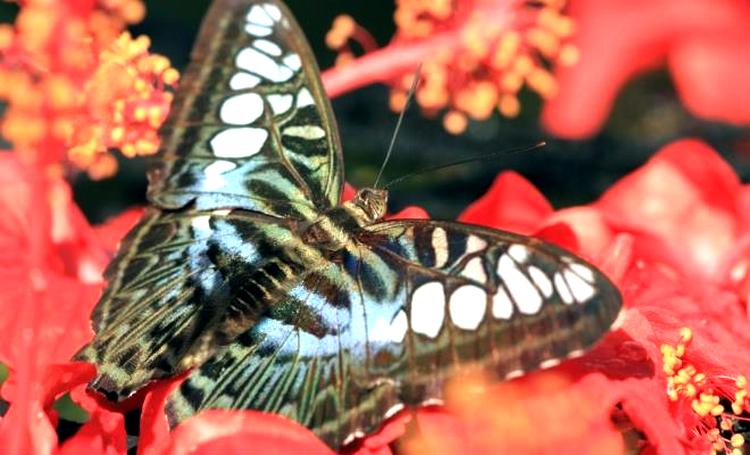
蝴蝶園座落在直落巴巷，是世界上最早規劃的熱帶活蝴蝶展示園。這塊園地共有超過四百種蝴蝶種類及其他本地昆蟲，皆維持在其自然的生活形態中。 這裡大約有四千至五千隻活蝴蝶，被包圍在一個特大型的封閉網裡，蝶群則在裡頭飛來飛去。這座蝴蝶園具有展示區和繁殖區的功能，這裡還有售賣紀念品商店及資訊中心。 此外，它還有百合花池塘、人工製造的瀑布及岩石園區。
 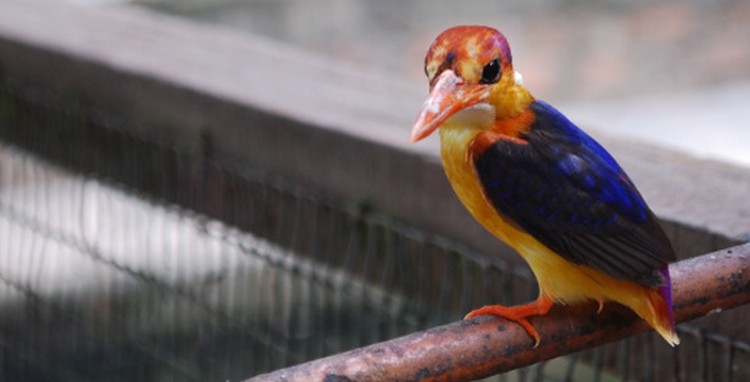
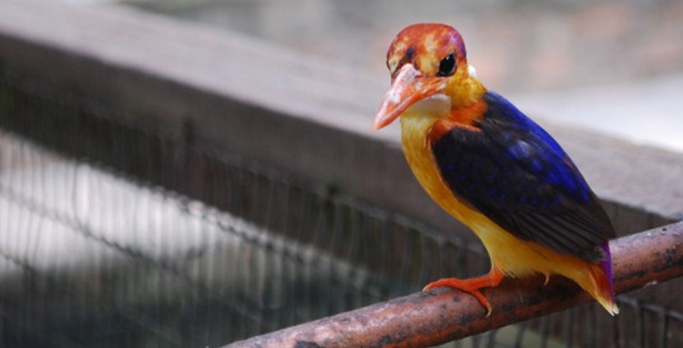
距離威省渡輪總站以東大約12公里處，就是史布朗再也五依格面積的飛禽公園。它是馬來西亞第一座飛禽公園，裡面有擁有超過八百種主要來自東南亞的鳥類，它們被養在特製的大型鳥舍裡。 這座規劃良好的公園裡還有許多人造的小島及花園，種滿了觀賞植物，其中包括胡姬及大紅花等。

檳城僑生博物館(Pinang Peranakans Mansion)是由約莫一個世紀前某位有錢的巴巴的豪華傳統大宅變身而成。 透過此博物館可一窺豐富峇峇娘惹文化的富裕生活景象，及他們的許多習俗和傳統。 檳城僑生博物館建於十九世紀末，曾是當地士紳Hai Kee Chan的寓所及店鋪，其不拘一格的設計和建築展現了中西文化合璧的多元風格，是檳城最美麗的建筑物之一。 室內有融合中式木刻的屏風，也有英式的地磚及蘇格蘭鑄鐵工藝，此外，館內展示超過 1000件古董和收藏品。
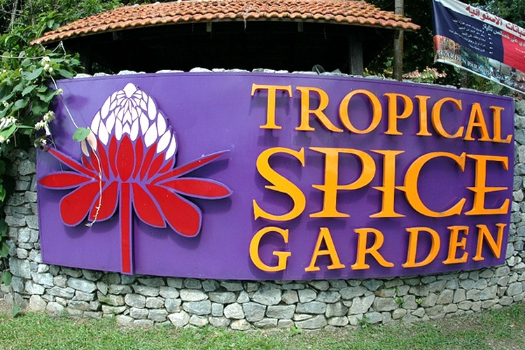 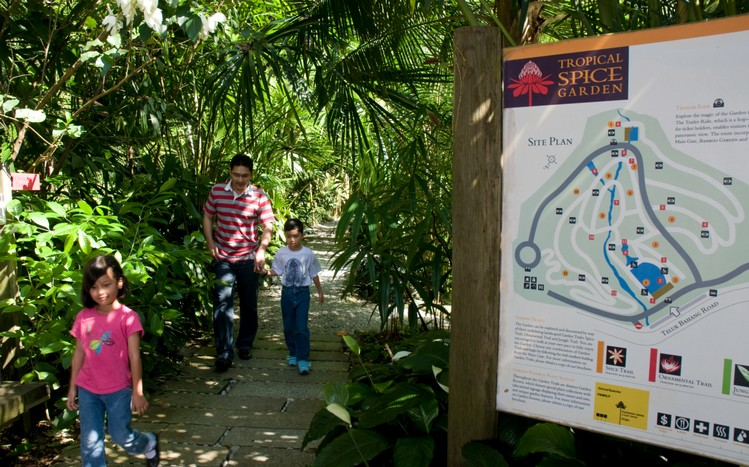 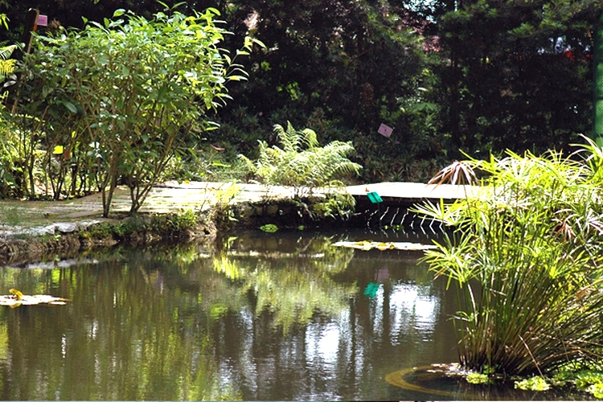 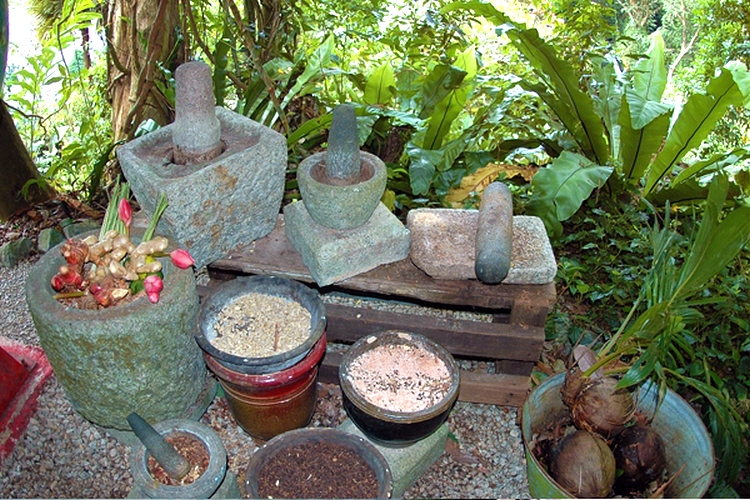
熱帶植物香料園(Tropical Spice Garden)隱藏在直落巴巷臨海的依個靜謐山谷裡，總佔地八英畝，已開發面積4.5英畝，其餘的都保持原本的生態面貌。 這裡原本是原始山林，部分地段則是橡膠園。香料園在2003年造園時，在保存原內原生植物的原則下加以規劃，使這個條裡有序的園林仍保留著原始幽深的氣息，成為城市人享受大自然景色舒緩壓力的好地方。 特別是踏進園林裡，撲鼻而來的各種香草、植物的味道，馬上就讓人神經大為鬆弛。 在瀰漫著香草氣息的員林裡，遊人可以循著香氣在園內尋幽探秘，或根據園內不同顏色的指示牌，展開不同園區的自由遊覽，想對各種花草和香料有更多認識，還可以聘請一位導遊，一邊聽介紹，一邊仔細觀賞園內的一切，沿著自然步道走訪小橋流水、瀑布與各種主題庭園。 香料園地勢居高臨下，依山觀海，在園裡山徑上穿梭，不時有俯瞰全園甚至遠處海灘的絕佳景觀機會。這個原本的森林地帶，在有規劃的開闢發展後，除了成為引人入勝的景點之外，也是具有科學研究及教育用途的中心。 2004年8月，香料園特別增設了熱帶香料園咖啡屋，除了開放給遊園的遊人，也對外開放，遊人在遊園走累了可以在這裡喝飲料或享用餐點。 居高臨下的香料園咖啡屋也等於香料園絕佳的觀景台，可以觀賞到一望無際的海景。在這裡遊人還可以品嘗到外界鮮少可以嘗到的香草之，獨特的味道令人印象深刻。 除了遊園的遊客，咖啡屋也對非遊園客開放，惟只是到咖啡屋觀賞景色者必須支付一令吉的入門票，而有關票據則可以當現款在咖啡屋用來購買飲料或餐點。有關咖啡屋可以容納70人，可以進行團體或公司的聚餐會或者派對。
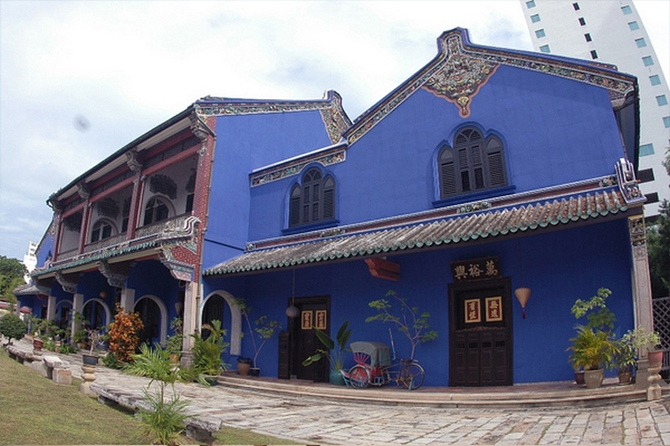 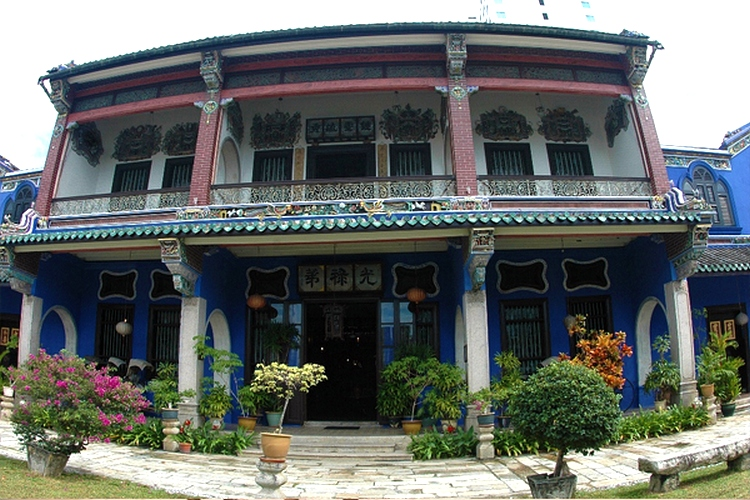 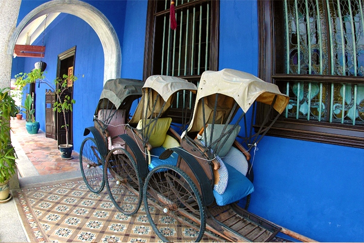
張弼士古宅(Cheong Fatt Tze Mansion) 又稱藍屋，是檳城首府喬治市最美的建築，現在已經被列為聯合國教科文組織的社會文化遺產之一。 建造這棟豪宅的原屋主張弼士(1840~1916)，是清朝末期著名的商人，他被稱為「中國第一位資本家」，紐約時報也曾譽他為「東方的洛克菲勒」。 張弼士古宅(Cheong Fatt Tze Mansion)共有38個房間、5個庭院、7座樓梯、和220扇窗戶。既有中式的精緻木雕與清瓷剪黏，又有西式的庭閣樓宇，中西風格完美結合，高雅而不華俗。 這棟故居平時開放限定導覽，並提供16間客房住宿，房內保有傳統的中式裝潢，和現代化的冷氣與衛浴設備。此外，此處也是檳城熱門的宴會場所，故居提供舉辦婚宴或是派對的全套佈置和餐點。
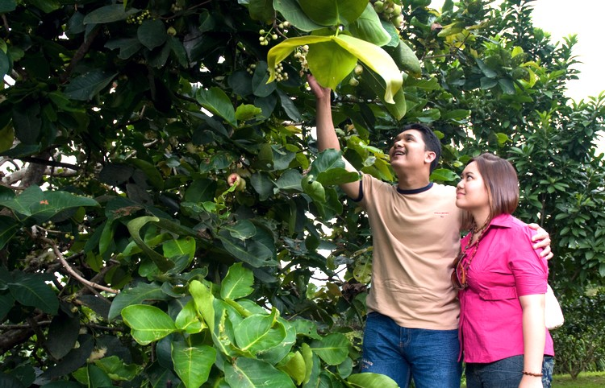
馬來西亞不只是宗教、種族和文化多元，也有物種極為豐富的動、植物。在植物群中，已經被辨識出有370種水果是可食用的，裡面不乏罕見和奇特的水果，足以滿足最挑剔的饕客的味蕾。 熱帶水果園 (Tropical Fruit Farm) 位於Teluk Bahang 海拔800公尺的山地，佔地25英畝的果園在青山環抱之中。 園內栽種著超過200種的果樹，不論在任何季節造訪，都有機會品嚐到不同特色的水果。 作為生態旅遊概念發展的果園，除了品嚐各種各樣水果，還可以觀看到果樹的生態、水果如何從樹上生長出來，甚至和她們近距離接觸，也是參觀果園的一大樂事。 雖然果園以「熱帶」為名，那裏除了熱帶果樹也種植了許多來自亞熱帶的水果，除了供遊人觀賞，也具有研究用途，園內不少原不屬於熱帶及本地品種的果樹，在喜歡研究果樹生態的園主柯優慶細心培植和馴化下，不少都能夠開花結果。 在多年的收集下，熱帶果園已經收集了許多來自全球各地的果樹品種，包括來自中南美洲、南美洲、非洲中部、印度及中東，甚至加勒比海及太平洋群島的原生果樹。 果園內也栽種依些特別品種的水果。園主柯優慶說，這些特別品種的果樹都是他的「收藏」，以果王榴槤為例，這裡就有野生的樹種，榴槤果實不是一般長在樹枝上而是長在主幹的。此外還有原生於沙巴州的紅榴槤等。 熱帶水果園在1993年開始規劃發展，遊客在熱帶果園除了可以品嘗到各種鮮美的水果及果汁外，還可以進行遊園活動，轉一圈大概需要一個小時。再遊園時還會有工作人員在一旁講解，遇到成熟的果子還能採兩個夏來品嘗。 果園裡的主路兩邊種滿了各種各樣的果樹，其中香蕉就有超過30種之多；例如一條有一公斤重的大象牙蕉，也有體積只有拇指大小的帝王蕉，還有要煮熟才能吃的飯蕉和菜蕉，要烤才能吃的BBQ香蕉等。
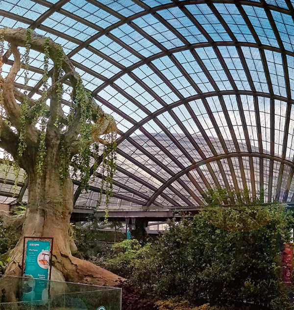 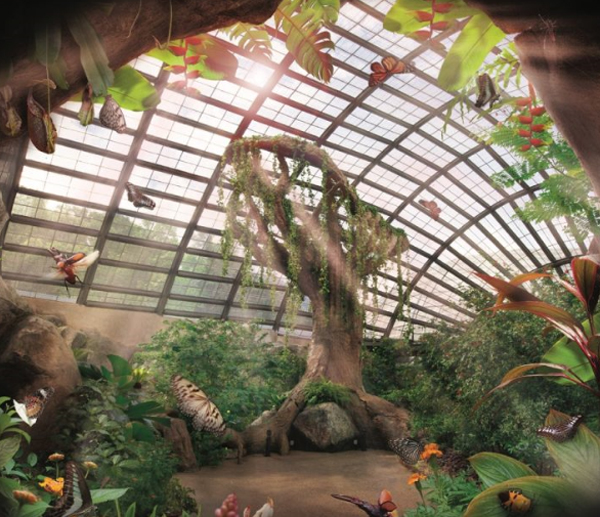 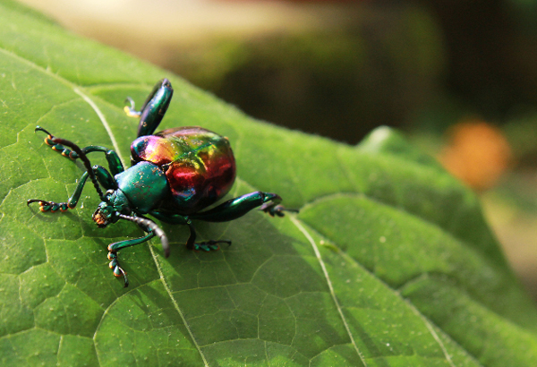
想像一下，自然界最大的教室和發現中心，蝴蝶和昆蟲可以自由地出來玩耍。在Entopia內有兩個世界; 自然生活室外花園和繭室內發現中心。在Entopia的整個展覽中展示了150多種動植物。
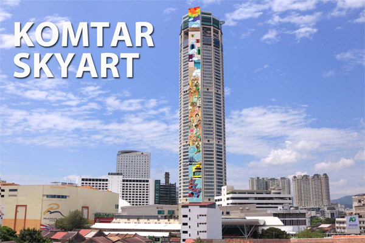 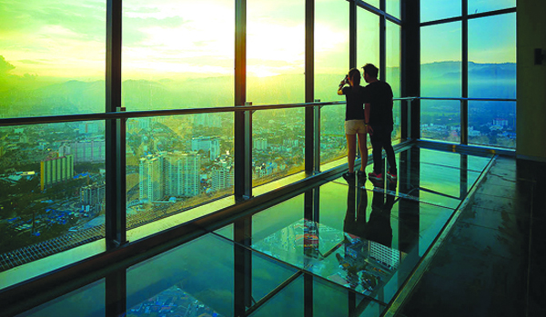 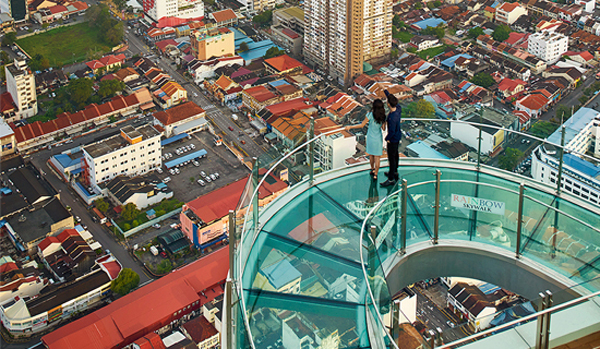
檳城最高的大廈叫檳城光大，共有68層高，將65樓變成室內觀景台，68樓就有餐廳和露天觀景玻璃步道(彩虹步道)，可高空欣賞檳城美景！